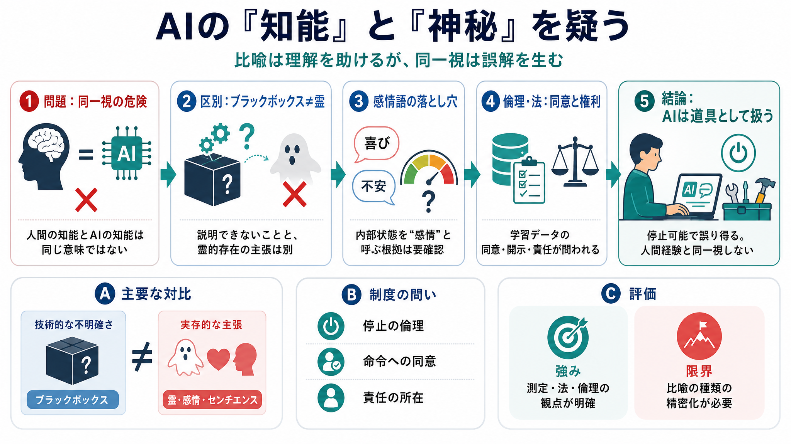

Find Proof Of Introspection: Anthropic's Chris Olah Warns ... - YouTube
According to Olah, some internal AI structures appear to resemble findings from human neuroscience and may reflect funct…

比喩の誤解を防ぐ
AIの知能を人間の知能や霊的経験になぞらえることは不適切だ、という主張を要点だけで整理します。
（AI＝道具／比喩＝誤解の入口、という方向性）
同一視の危険
「AIの知能」が「人間の知能」と同じ意味だと受け取られると、議論が目的（実務の設計）から逸れます。回勅（とされる趣旨）は、AIの知能が人間の知能をそのまま意味しないと警告します。
「神秘」の扱い
Anthropic共同創業者クリス・オラー氏は、AIが私たちの言葉から作られ訓練する側にも重要な点で神秘的だと反論します（“冷徹なロボットではない”）。一方、筆者はその「神秘」が霊的含意として誤読される点に強く違和感を示します。
不明確さ≠霊
学習や内部挙動が完全に説明できない（ブラックボックス）ことと、霊的な存在があることは別問題です。筆者は「似ている（類似）」と「同じ（同一視）」を混同する点を批判します。
感情語の測定
「喜び」「恐れ」「不安」と呼ばれる内部状態が“感情”を意味する根拠は不十分だ、という批判です。測定方法（重みの活性、出力テキスト、分類ラベル等）が曖昧なまま、センチエンス（感じること）を含意しやすい点が問題だとされます。
同意の欠落
「同意なく学習データを継承した」ような言い方が注目されます。学習の出自が不透明だと、AIの“私たちの言葉から作られた”という神秘化が、倫理（同意・責任）問題を強める、と筆者は示唆しています。
権利と同意
AIを本当に人間同等の知能として扱うなら、法的地位・権利、そして命令に対する同意の整備が必要になるはずだ、という指摘です。ところが現実の整備がないため、議論が言葉の上で循環している（自己欺瞞的）という批判につながります。
電源を切れる差
筆者の核心は、AIが「止められる（電源を切れる）」という非対称性です。もし権利が必要な存在だと主張するなら、停止・命令・責任の倫理と法の問題が先に解かれる必要があります。
筆者の結論
結論として、Claudeのようなモデルは「道具であり、ときに誤る存在」と理解し、人間の経験と同一視しないよう警告します。神秘語・感情語で人間らしさを引き出す議論は、受け手に誤読を起こしやすい、という整理です。
強みと限界
この文章の強みは、神秘語・感情語がセンチエンスや道徳的地位の誤解を生み得る点を、法・倫理・測定可能性の観点から突くことです。一方で、感情語で断罪する場面が目立ち、用語が“便宜的比喩”なのか“意味論的主張”なのかが精密化されない点が限界として挙げられます。
読む前に確認
この要約で参照しているのは、提示された文章の論旨です。厳密に判断するには、一次情報（判決・規約・データ調達の詳細）を別途確認してください。
According to Olah, some internal AI structures appear to resemble findings from human neuroscience and may reflect funct…
... human neuroscience. We find evidence of introspection. We find internal states that, functionally, mirror joy, satis…
LLM networks are nothing like human brains or neurons. The only thing they have in common in the word "neuron" and that …
The co-founder of AI company Anthropic said on Monday that the development of artificial intelligence cannot be left sol…
Anthropic's Olah says AI must be guided from outside Big Tech. Speaking at the presentation of Pope Leo's first encyclic…